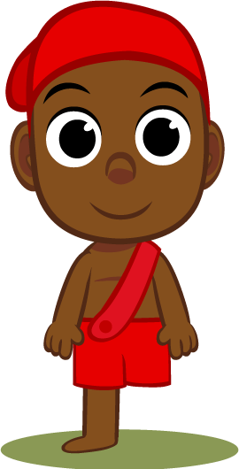
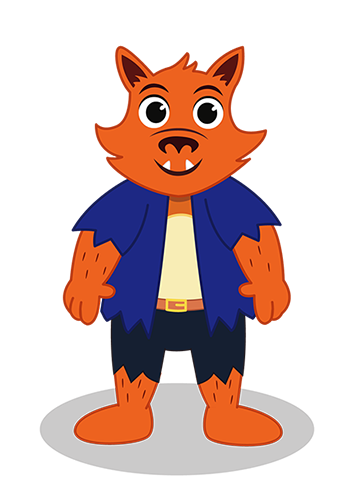
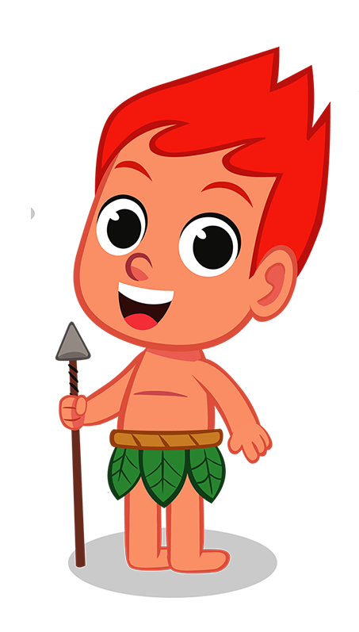
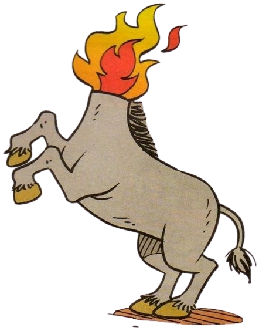

Sul
Sací-Pererê
O saci é um negro jovem de uma perna só, portador de uma carapuça sobre a cabeça que lhe concede poderes mágicos.
Norte
Boto Cor-de-Rosa

Boto-cor-de-rosa é uma lenda do folclore que fala de botos que se transformavam em homens sedutores de mulheres, engravidando-as e desaparecendo depois.
Centro-Oeste
Lobisomem
O Lobisomem é um homem que trabalha de dia, e de noite se transforma em um simpático lobo.
Sudeste
Curupira
A lenda caracteriza o curupira como um menino de tamanho pequeno, de cabelos vermelhos, dentes afiados e pés virados para trás. Seu objetivo é desorientar caçadores. Para isso, ele usa assobios ensurdecedores e suas pegadas ao contrário.
Nordeste
Mula-sem-cabeça
Nas narrativas lendárias, as pessoas a descrevem como uma mula marrom ou preta muito assustadora e com ferraduras de prata ou aço nos cascos. O que mais impressiona quem ouve as estórias da mula sem cabeça é a sua característica principal – a bola de fogo constante que tem no lugar da cabeça.
Região
Nome
descrição
Região
Nome
descrição